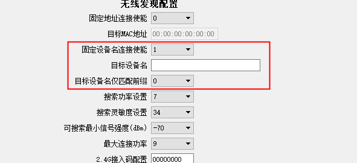
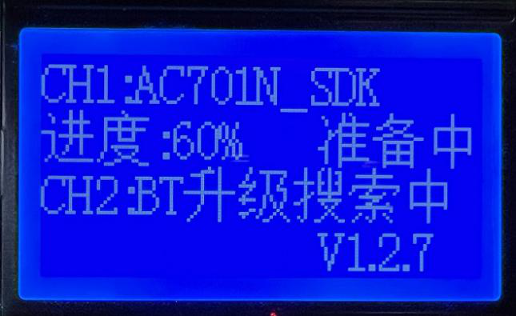
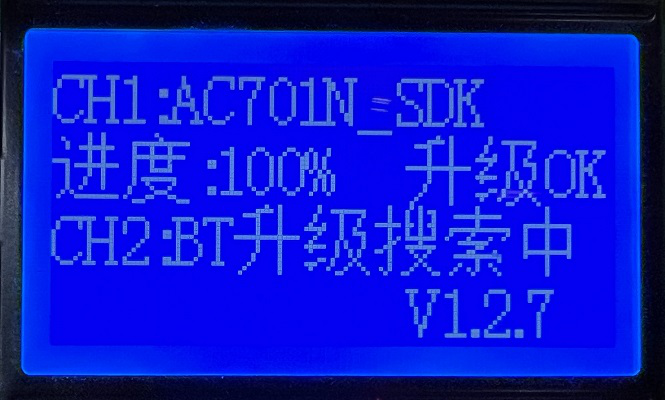
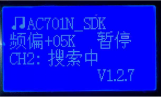
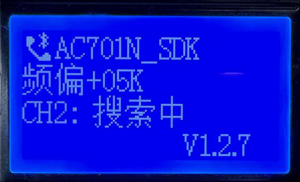
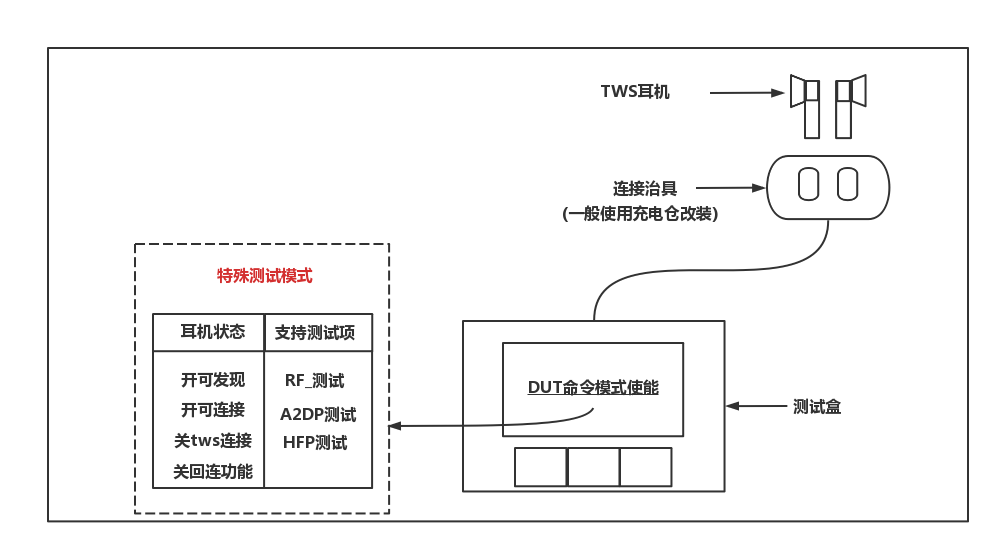
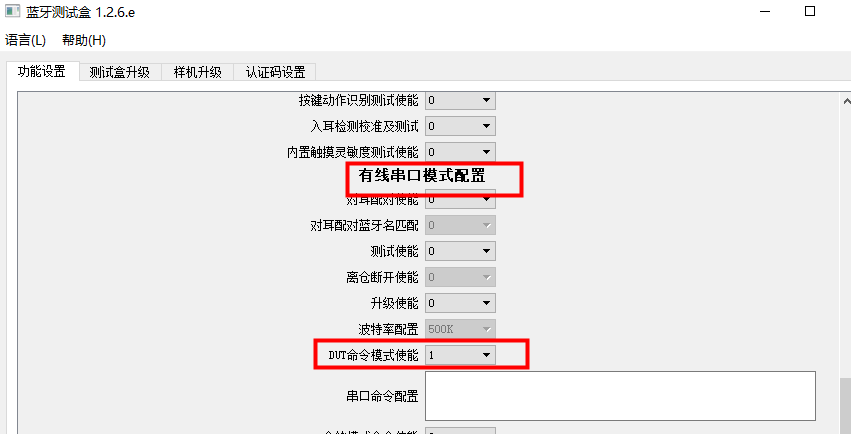

3.7. 测试盒批量升级、测试用例介绍
3.7.1. 蓝牙设备批量无线升级方法
3.7.1.1. 功能介绍
杰理蓝牙耳机/音箱/手表等方案均可通过测试盒无线批量升级。
支持双通道同时升级
支持固定设备名连接，防止误升非目标设备
支持仅匹配设备名前缀连接，支持每台设备的名字带不同的mac地址后缀
支持脱机升级（仅需将升级文件拷贝到TF卡并插入测试盒即可离线升级）
3.7.1.2. 操作方式
测试盒上位机设置
【1】PC端连接测试盒，长按测试盒位于最右按键，进入PC配置模式，测试盒显示“LOADING”；

【2】在上位机“功能设置”页面，配置“无线发现配置”，设置目标升级设备名字及是否仅匹配前缀；
【3】点击“保存设置到测试盒”；

测试盒拨码配置
测试盒拨码6在“OFF”档（其他拨码位置无关）为经典蓝牙模式，升级耳机/音箱等蓝牙设备用这一档位。
测试盒拨码6在“ON”档为BLE模式（拨码1需为OFF，即连接BLE从机），升级ble数传等设备用此档位。
Note
改动拨码或者改动上位机的配置均需要重启测试盒才能生效新的配置
操作步骤
【1】将拷贝有升级文件（如*.bfu或*.ufw）的TF卡插入测试盒左侧TF卡座内，屏幕显示“BT升级搜索中”，即进入无线搜索和升级模式。

【2】连上设备后，测试盒对应通道会显示设备名和升级进度。

Note
AC693x系列之后芯片无线升级（包括经典蓝牙和BLE）均分为“准备中”和“升级中”两个阶段，而AC692x等之前的芯片仅有“升级中”阶段。
“准备中”阶段蓝牙中断或者断电仍能搜索原来的蓝牙名进行升级。
“升级中”阶段在出现升级中断会自动搜索xxx_update的设备名进行重连升级。
【3】“升级中”进度显示100%即升级成功，设备会复位进入对应升级成功的UI（如“滴滴”提示音或特定闪灯），且UI提示结束后进入关机，防止被测试盒重连再次进入升级。

【4】当升级过程中出现错误，会提示对应的错误码，具体错误码定义可查表初步定位

【5】升级完一台设备会自动连上附近的其他同名设备进入升级，只需设备开机能够被测试盒发现即可自动进入升级。
Note
1.BLE模式升级需要在“准备中”切换到“升级中”状态需要断开重连一次，非异常断开。经典蓝牙则不需要在此阶段重连。
2.实际产线可能有开机的同名设备，但非目标升级设备，所以建议无线升级尽可能在屏蔽房内操作，避免误升级其他同名样机。
3.7.2. 蓝牙设备批量有线升级方法
3.7.2.1. 功能介绍
杰理蓝牙耳机/音箱/手表等方案均可通过测试盒有线串口批量升级。
支持双通道同时升级
有线一对一升级，不会误连同名设备
支持脱机升级（仅需将升级文件拷贝TF卡并插入测试盒即可离线升级）
支持升级串口波特率可调
3.7.2.2. 操作方式
测试盒上位机设置
【1】PC端连接测试盒，长按测试盒位于最右按键，进入PC配置模式，测试盒显示“LOADING”；
【2】在上位机“功能设置”页面，配置“有线串口模式配置”，将“升级使能”设为“1”，并选择波特率（默认500K），点击“保存设置到测试盒”；

测试盒拨码配置
该模式不关心测试盒拨码状态。位。
操作步骤
【1】将拷贝有升级文件（如*.bfu或*.ufw）的TF卡插入测试盒左侧TF卡座内，屏幕显示“UART升级搜索”，即进入有线升级模式。

【2】将待升级设备放入串口治具中，即进入有线升级过程，并显示当前升级进度。

【3】当升级过程中出现错误，会提示对应的错误码，具体错误码定义可查表初步定位。
【4】4.升级完后从治具取出耳机，换入新的待升级设备。
3.7.3. 经典蓝牙设备批量测试方法
3.7.3.1. 功能介绍
杰理蓝牙耳机/音箱等经典蓝牙方案均可通过测试盒无线批量测试。
支持双通道同时测试
支持固定设备名连接，防止误升非目标设备
支持仅匹配设备名前缀连接，支持每台设备的名字带不同的mac地址后缀
支持通过有线串口快速连接
支持频偏校准+播歌+按键+通话 顺序执行测试
3.7.3.2. 操作方式
测试盒上位机设置
场景一：设备通过无线建立连接
【1】PC端连接测试盒，长按测试盒位于最右按键，进入PC配置模式，测试盒显示“LOADING”；
【2】在上位机“功能设置”页面，配置“无线发现配置”，设置目标升级设备名字及是否仅匹配前缀；
【3】点击“保存设置到测试盒”；

场景二：设备通过有线串口建立连接
【1】PC端连接测试盒，长按测试盒位于最右按键，进入PC配置模式，测试盒显示“LOADING”；
【2】在上位机“功能设置”页面，配置有线串口配置，将测试使能”改成“1；
【3】点击“保存设置到测试盒”；

测试盒拨码配置
拨码序号 |
测试项 |
ON/OFF |
备注 |
|---|---|---|---|
1 |
通话测试 |
ON |
CVSD格式编码 |
2 |
通话测试mic声音回路模式 |
ON |
设备mic–>测试盒蓝牙传输–>设备dac输出，需开通话测试 |
2 |
通话测试mic声音测试盒输出模式 |
OFF |
设备mic–>测试盒dac输出，需开通话测试 |
– |
A2DP播歌 |
ON |
无需拨码，默认开启 |
4 |
频偏测试 |
ON |
|
5 |
频偏校准 |
ON |
需开频偏测试 |
Note
改动拨码或者改动上位机的配置均需要重启测试盒才能生效新的配置。
测试步骤
【1】建立连接
场景一：设备通过无线建立连接 将待测设备开机并靠近测试盒，测试盒搜索到目标设备即发起蓝牙连接，连接后测试盒显示设备名和频偏（若开了频偏测试）。
场景二：设备通过有线串口建立连接
将待测设备放入串口治具（参考《测试盒串口连接治具介绍》），测试盒通过串口获取对应设备信息建立连接，连接后测试盒显示设备名和频偏（若开了频偏测试）。
【2】频偏测试及校准，当测试盒测试的频偏（开校准为校准后的频偏）超过上位机设定的报警值（默认值为10K）时，测试盒会发出“滴滴滴”的报警声，提示频偏异常。


【3】测试盒在显示频偏后会自动进入播歌测试，此时待测设备的喇叭会听到测试盒内置歌曲声音。确认设备声音无异常后可通过测试盒切换按键切到下一项测试。
通道1的切换按键是“左按键”
通道2的切换按键是“中按键”
“右按键”可同时断开通道1和通道2的设备。

【4】在播歌过程中支持部分待测样机按键功能的识别，比如上下曲，播放/暂停等按键操作可在测试盒的LCD上显示并执行对应操作，此阶段可以确认待测设备的按键硬件或功能定义是否正常。

【5】若拨码配置“通话测试”，则切换后进入通话测试，待测设备的MIC 采集的声音会传到测试盒，测试盒根据拨码配置是从测试盒喇叭输出还是回传到待测设备。此阶段可以确认待测设备的mic以及蓝牙esco链路工作是否正常。

【6】当通话测试完成，可以按对应通道切换按键断开蓝牙结束当前设备的测试，等待下一台设备连上，重复1-4步的操作。
Note
除AC690x、AC692x系列外，频偏校准默认仅支持校准一次，需要重新校准需在升级过程前将isd_config.ini文件中配置BTIF_OPT=0，即擦除原来蓝牙配置区，才能重新校准。
3.7.4. TWS耳机量产快速测试方法
3.7.4.1. 功能介绍
杰理TWS蓝牙耳机方案，可以通过测试盒，快速进入特殊测试模式，配合产测设备，进行rf、电声、气密性等测 试，具体测试项需要产测设备支持。特殊测试模式下，耳机处于开可发现、开可连接、关tws功能、关回连功 能，耳机支持RF测试，蓝牙音频测试（a2dp、hfp）等。
测试完成后，将tws耳机放进对应充电仓，耳机恢复正常状态。

3.7.4.2. 操作方式
测试盒上位机设置
【1】PC端连接测试盒，长按测试盒位于最右按键，进入PC配置模式，测试盒显示“LOADING”；
【2】打开上位机软件，在有线串口模式配置“DUT命令模式使能”为1；

测试盒硬件环境
【1】拨码配置：该模式不关心拨码开关的位置；
【2】测试盒串口端接治具，参考《测试盒串口连接治具介绍》
操作步骤
【1】Tws耳机通过测试盒进入特殊测试模式
【2】Tws耳机通过测试盒进入特殊测试模式
【3】测试完成，将耳机放入正常充电仓，恢复正常模式
3.7.5. 烧录阶段批量频偏校准方法
3.7.5.1. 校频波发射模式使用说明
V1.2.5版本添加校频波频点设置配置项

校频波发设模式使用说明
校频波发射模式：V125支持校频波发射模式，该功能配合1拖8烧录工具可以在烧录时中将待烧芯片的蓝牙频偏进行校准，以省去后续校频的步骤。
进入校频波发射模式的方法：上电后快速长按左边功能按键，直到LCD显示“校频波发射模式”界面，即进入该模式；
配置校频波频点的方式：校频波默认发射频点为频点1，如需修改其他频点在PC端界面的“校频波频点配置”项修改频点（范围为0~9），测试盒LCD会在校频波发射模式显示该频点。
Note
测试盒的发射频点要和1拖8工具的频点配置一致方可正常校频，修改频点时需同步修改1拖8烧录器PC工具“校频波频点设置”；
3.7.5.2. 配合一拖八烧录器进行批量频偏校准
测盒可以配合一拖八烧录器进行批量频偏校准，具体使用流程请可以参考《 频偏校准功能》